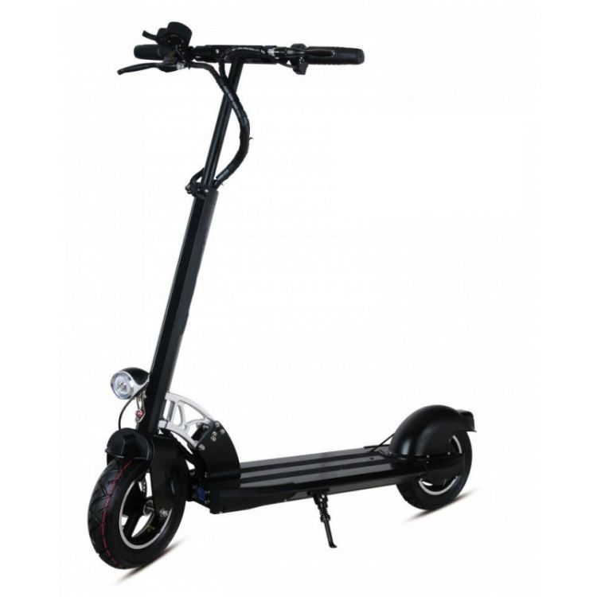

Welcome to Elektrinis paspirtukas
elektrinis-paspirtukas.lt
2020.10.27 09:47Prisijungti Susisiekite su mumis Susisiekite dabar: +370 645 81202 Krepšelis 0 Prekė Prekės (tuščia)
Prekių nėra
Turi būti nustatyta Pristatymas 0,00 € VisoPirkti
Prekė sėkmingai pridėta į krepšelį Kiekis Viso Krepšelyje yra 0 prekė (-ės). Krepšelyje yra 1 prekė. Prekės viso Viso pristatymas Turi būti nustatyta Viso Tęsti apsipirkimą Pereiti prie apmokėjimo Meniu Pradžia Citycoco Paspirtukai Riedžiai Taisyklės Pristatymas Grąžinimas Priedai / DalysDar niekad ekonomiškas važiavimas nebuvo toks stilingas.
Vertinamas už patogumą, pravažumą, o labiausiai už ekologiją bei ekonomiškumą.
Plačiau !
Pramoga vaikams, susisiekimo priemonė suaugusiems.
Jūs tiesiog aplenksite visus kamščius ir spūstis, judėsite greičiau ir paprasčiau.
Plačiau !
Rekomenduojame Perkamiausios Specialūs pasiūlymai 480,00 € Pristatymas per 10 d.d.Elektrinis paspirtukas su sėdyne TOODI
Itin greitas ir galingas, idealus pasirinkimas mėgstantiems greitį ir patikimą tvirtą korpusą.Išmanus LCD ekranas rodo parametrus: greitį, kelionės laiką ir nuvažiuotą atstumą, baterijos įkrovimo lygį, žmogaus kūno temperatūrą Priekiniai ir sėdynės amortizatoriai Būgniniai galiniai stabdžiai Priekinis, galinis ir stabdžių žibintai 3 greičio lygiai
480,00 € Į krepšelį Plačiau Pristatymas per 10 d.d. 120,00 € 240,00 € -50% Prekė su papildomais pasirinkimais Išpardavimas!Riedis 6,5
Ypač mobilus ir kompaktiškas 6,5" colių dydžio ratais. Viduryje ir apačioje LED apšvietimo lemputės. Pritaikytas vartotojams nuo 20 kg. svorio Stabili platforma.
120,00 € 240,00 € -50% Į krepšelį Plačiau Prekė su papildomais pasirinkimais 1 500,00 € Turėsime lapkričio 10 d.Citycoco X17 1500W 40ah (su dviem...
Galimos dvi baterijos vienu metu. 2018 metų dizaino modelis Priekinis ir galinis žibintai Priekiniai bei galiniai posūkių žibintai. LCD ekranas nurodantis kilometražą, baterijos lygį, važiavimo greitį Priekiniai ir galiniai amortizatoriai komfortabiliam važiavimui Patogi dviguba, odinė sėdynė Garsinis, bei posūkių signalai Diskiniai stabdžiai Išimama...
1 500,00 € Į krepšelį Plačiau Turėsime lapkričio 10 d. 750,00 € Yra sandėlyjeElektrinis paspirtukas su sėdyne R10
Nuimama sėdynė su amortizatoriais Priekinis ir galinis žibintai Pripučiami 10" ratai, priekiniai ir galiniai amortizatoriai Garsinis signalas mygtuku Ypač plati paspirtuko bazė Išmanus LCD ekranas rodo: greitį, nuvažiuotą atstumą, baterijos įkrovimo lygį, greičio pavarą Reguliuojamas vairo aukštis Nulenkiamos rankenos, patogiai sulankstomas
750,00 € Į krepšelį Plačiau Yra sandėlyje 350,00 € Pristatymas per 10 d.d.Elektrinis paspirtukas MK2
Ypatingai jaunatviškos išvaizdos paspirtukas, subtiliu mėlynos spalvos korpusu.Reguliuojamo aukščio vairalazdė. Sulankstomačios per 1 sekundę. Trys važiavimo greičio lygiai. LCD ekranas rodo: greitį, kelionės laiką, nuvažiuotą atstumą, baterijos įkrovimo lygį, greičio pavarą. Priekinis žibintas, papildomi dideli raudoni LED žibintai paspirtuko apačioje.
350,00 € Į krepšelį Plačiau Pristatymas per 10 d.d. 550,00 € Pristatymas 2-5 d.d.Elektrinis dviratis M11
Skirtas visoms amžiaus grupėms: suaugusiems, vaikams nuo 7 metų, paaugliams ir senjorams.Priekiniai ir galiniai diskiniai stabdžiai Paspirtuko denis padengtas neslystančia medžiaga. Patogus krepšelis daiktams Garsinis signalas (skambutis). LCD ekranas su persijungiančiais modeliais rodys: baterijos išsikrovimo lygį, važiavimo greitį, nuvažiuotą atstumą,...
550,00 € Į krepšelį Plačiau Pristatymas 2-5 d.d. 1 500,00 € Turėsime lapkričio 10 d.TRIRATIS citycoco X5 2000 W, 20AH
Modernus, šiuolaikiškas ir galingas. Naujos kartos modelis: dar išraiškingesnis DVIGUBAS metalinis priekinis rėmas, didelis apvalus priekinis žibintas su spalvotomis led švieselėmis, posūkių signalai ir šviesos, dviguba sėdynė su atrama, trys greičio lygiai, važiavimas į priekį ir atbulomis, garsinis signalas, LCD ekranas.
1 500,00 € Į krepšelį Plačiau Turėsime lapkričio 10 d. 1 750,00 € Turėsime lapkričio 10 d.TRIRATIS citycoco X5 2000 W, 40AH
Modernus, šiuolaikiškas ir galingas. Naujos kartos modelis: dar išraiškingesnis DVIGUBAS metalinis priekinis rėmas, didelis apvalus priekinis žibintas su spalvotomis led švieselėmis, posūkių signalai ir šviesos, dviguba sėdynė su atrama, trys greičio lygiai, važiavimas į priekį ir atbulomis, garsinis signalas, LCD ekranas.
1 750,00 € Į krepšelį Plačiau Turėsime lapkričio 10 d. 600,00 € IšparduotaElektrinė dviratė transporto priemonė...
Manevringas ir lengvai valdomas elektrinis paspirtukas pritaikytas visoms amžiaus grupėms. Tinkamas suaugusiems ir vaikams nuo 7 m. Priekinis bei galinis žibintai ir posūkiai. Priekyje įmontuotas metalinis krepšys - daiktadėžė. Reguliuojamo aukščio tiek vairalazdė, tiek sėdynė. Atraminė kojelė. Sėdynė keleiviui. 14 colių dydžio ratai.
600,00 € Į krepšelį Plačiau Išparduota 120,00 € 240,00 € -50% Prekė su papildomais pasirinkimais Išpardavimas!Riedis 6,5
Ypač mobilus ir kompaktiškas 6,5" colių dydžio ratais. Viduryje ir apačioje LED apšvietimo lemputės. Pritaikytas vartotojams nuo 20 kg. svorio Stabili platforma.
120,00 € 240,00 € -50% Į krepšelį Plačiau Prekė su papildomais pasirinkimais 40,00 € Yra sandėlyjeĮkroviklis
Įkroviklis tinka ličio baterijoms, 67,2W, 2A.Tinka tiesiogiai pajungti į 220W tinklą.Yra indikacinė lemputė, kuri informuoja apie pilną baterijos įkrovimą.
40,00 € Į krepšelį Plačiau Yra sandėlyje 1 150,00 € Yra sandėlyjeElektrinis triratis J3 (ličio jonų 20AH...
Triratė konstrukcija užtikrina šimtaprocentinį stabilumą. Tinkamas ir jaunesniems ir vyresnio amžiaus žmonėms. Puikus pasirinkimas turintiems negalią ar sveikatos sutrikimų, dėl kurių sunku vaikščioti. Siauras, - vos 62 cm. pločio, tilps pro standartinio pločio duris. Nesudėtingas valdymas, nereikia vairuotojo pažymėjimo. Atbulinio važevimo pavara.
1 150,00 € Į krepšelį Plačiau Yra sandėlyje 950,00 € Yra sandėlyjeElektrinis triratis J3 (švino rūgšties...
Triratė konstrukcija užtikrina šimtaprocentinį stabilumą. Tinkamas ir jaunesniems ir vyresnio amžiaus žmonėms. Puikus pasirinkimas turintiems negalią ar sveikatos sutrikimų, dėl kurių sunku vaikščioti. Siauras, - vos 62 cm. pločio, tilps pro standartinio pločio duris. Nesudėtingas valdymas, nereikia vairuotojo pažymėjimo. Atbulinio važevimo pavara.
950,00 € Į krepšelį Plačiau Yra sandėlyje 700,00 € IšparduotaElektrinė dviratė transporto priemonė, 20 AH
Manevringas ir lengvai valdomas elektrinis paspirtukas pritaikytas visoms amžiaus grupėms. Tinkamas suaugusiems ir vaikams nuo 7 m. Priekinis bei galinis žibintai ir posūkiai. Priekyje įmontuotas metalinis krepšys - daiktadėžė. Reguliuojamo aukščio tiek vairalazdė, tiek sėdynė. Atraminė kojelė. Sėdynė keleiviui. 14 colių dydžio ratai.
700,00 € Į krepšelį Plačiau Išparduota 40,00 € Yra sandėlyjeCitycoco padanga 225/55-8 (18x9,5-8)
18 colių citycoco paspirtukams tinkanti padanga be kameros. *Papildomai galima įsigyti ratlankį.
40,00 € Į krepšelį Plačiau Yra sandėlyje 1 250,00 € Yra sandėlyjeCitycoco X17 1500W 20ah (su viena baterija)
Galimos dvi baterijos vienu metu. Priekinis ir galinis žibintai Priekiniai bei galiniai posūkių žibintai. LCD ekranas nurodantis kilometražą, baterijos lygį, važiavimo greitį Priekiniai ir galiniai amortizatoriai komfortabiliam važiavimui Patogi dviguba, odinė sėdynė Garsinis, bei posūkių signalai Diskiniai stabdžiai Išimama beterija. Signalizacija
1 250,00 € Į krepšelį Plačiau Yra sandėlyje 480,00 € Yra sandėlyjeElektrinis paspirtukas su sėdyne TOODI
Itin greitas ir galingas, idealus pasirinkimas mėgstantiems greitį ir patikimą tvirtą korpusą.Išmanus LCD ekranas rodo parametrus: greitį, kelionės laiką ir nuvažiuotą atstumą, baterijos įkrovimo lygį, žmogaus kūno temperatūrą Priekiniai ir sėdynės amortizatoriai Būgniniai galiniai stabdžiai Priekinis, galinis ir stabdžių žibintai 3 greičio lygiai
480,00 € Į krepšelį Plačiau Yra sandėlyje 550,00 € Yra sandėlyjeElektrinis dviratis M11
Skirtas visoms amžiaus grupėms: suaugusiems, vaikams nuo 7 metų, paaugliams ir senjorams.Priekiniai ir galiniai diskiniai stabdžiai Paspirtuko denis padengtas neslystančia medžiaga. Patogus krepšelis daiktams Garsinis signalas (skambutis). LCD ekranas su persijungiančiais modeliais rodys: baterijos išsikrovimo lygį, važiavimo greitį, nuvažiuotą atstumą,...
550,00 € Į krepšelį Plačiau Yra sandėlyje 120,00 € 240,00 € -50% Prekė su papildomais pasirinkimais Išpardavimas!Riedis 6,5
Ypač mobilus ir kompaktiškas 6,5" colių dydžio ratais. Viduryje ir apačioje LED apšvietimo lemputės. Pritaikytas vartotojams nuo 20 kg. svorio Stabili platforma.
120,00 € 240,00 € -50% Į krepšelį Plačiau Prekė su papildomais pasirinkimaisSekite mus Facebook'e
Greitas pristatymas
Prekes pristatysime per 2-5 darbo dienas.
Visada pasiruošę padėti!
Gyva pagalba ir konsultacijos telefonu, elektroniniu paštu, mes padėsime išsirinkti Jums patinkantį modelį, atsakysime į Jums rūpimus klausimus.
Saugus atsiskaitymas
Galite apmokėti per OPAY sistemą, įsigyti prekes išsimokėtinai, taip pat atsiskaityti grynaisiais pinigais pristatymo metu.
Ypač geros sąlygos perkant išsimokėtinai internetu!
Jeigu turite klausimų susijusių su el. parduotuvės užsakymu arba valdymu, skambinkite telefonu:
+370 645 81202
Naujienlaiškiai
FacebookSekite mus
Kategorijos
Paspirtukai Citycoco Riedžiai Priedai / DalysInformacija
Specialūs pasiūlymai Naujos prekės Perkamiausios Mūsų parduotuvės Susisiekite su mumis Pristatymas Privatumo politika Taisyklės Apmokėjimas Grąžinimas Svetainės žemėlapis elektrinis-paspirtukas.lt © 2020 | internetiniu parduotuviu nuoma : HostPartner.lt™Mano paskyra
Mano užsakymai Mano grąžinimai Mano suteiktos nuolaidos Mano adresai Mano asmeninė informacijaParduotuvės informacija
MB Elektrinis paspirtukas Susisiekite dabar: +370 645 81202 El. paštas: info@elektrinis-paspirtukas.ltAš sutinku su Privatumo politika ir Duomenų apsaugos tvarkymu (skaityti)
Privatumo politika Aš nesutinku Aš sutinku Privatumo politika Aš nesutinku Aš sutinku